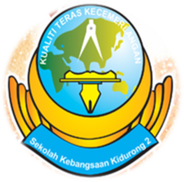

1. Universiti Teknologi Mara Samarahan
2. Sekolah Menengah Kebangsaan Kidurong, Bintulu, Sarawak.

3. Sekolah Menengah Kebangsaan Kidurong, Bintulu, Sarawak.
4. Sekolah Menengah Kebangsaan Kidurong, Bintulu, Sarawak.
5. Sekolah Kebangsaan Kidurong 2
